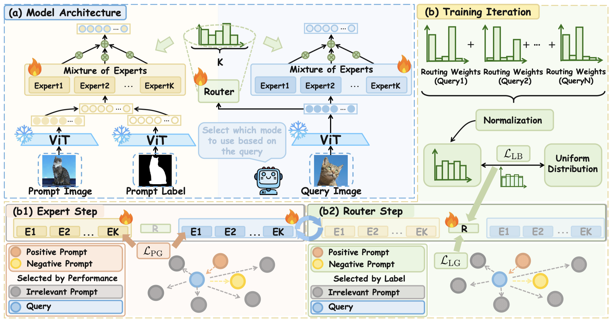
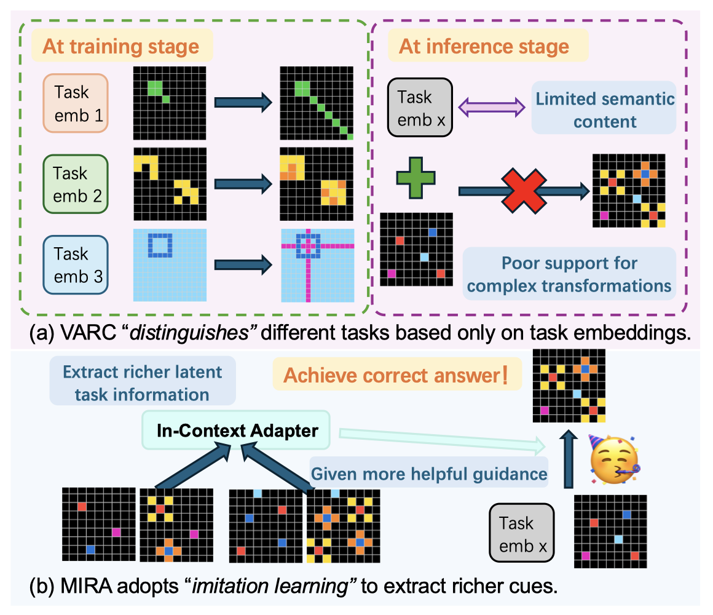

预计综合成绩排名专业前 5%
人工智能基础、生成式人工智能技术与应用、计算机组成原理、离散数学、数据结构、C/C++与汇编语言程序设计等
大一学年 专业前 5%
数学分析、高等代数、概率论与数理统计、复变函数与积分变换等
我的近期研究聚焦于以下方向：
Visual In-Context Learning (VICL)，关注示例检索、标签一致性与上下文适配机制。
多图像理解，探索视觉-语言模型的上下文推理与生成能力。
ARC (Abstraction and Reasoning Corpus) 任务，基于示例的类比推理与规则学习。

Proceedings of the IEEE/CVF Conference on Computer Vision and Pattern Recognition (CVPR), 2026
共同第一作者 · 提出标签感知提示检索框架 LaPR，在前景分割、目标检测和图像着色任务上取得 SOTA 效果

提出基于视觉上下文的类比推理框架 MIRA，通过将任务示例作为视觉上下文引入生成模型，使模型能够动态提取示例中的变换模式，提升复杂 ARC 任务上的推理性能。当前处于实验验证与论文撰写阶段。
针对视觉上下文学习 (VICL) 中示例检索忽略标签一致性导致性能退化的问题，主导提出并开发了标签感知提示检索框架 (LaPR)：
针对 ARC 任务中现有视觉生成方法单一任务表示难以编码复杂变换规则的问题，提出并开发基于视觉上下文的类比推理框架 (MIRA)：
参与首个针对全双工 (Full-Duplex) 语音模型的评估基准 FLEXI 的构建与实验工作：
了解机器学习、深度学习核心算法；熟练使用主流深度学习框架 PyTorch；熟练掌握 C/C++、Python 等编程语言。
具备基础英文文献阅读与学术写作能力，能流畅阅读顶会论文。
担任校团委文化艺术中心副部长，负责校园新年联欢会等大型活动的舞台中控工作；参与校合唱团多项文艺演出活动。
积极参与校园迎新活动、书香校园活动等多项志愿活动，累计志愿时长达 150+ 小时。